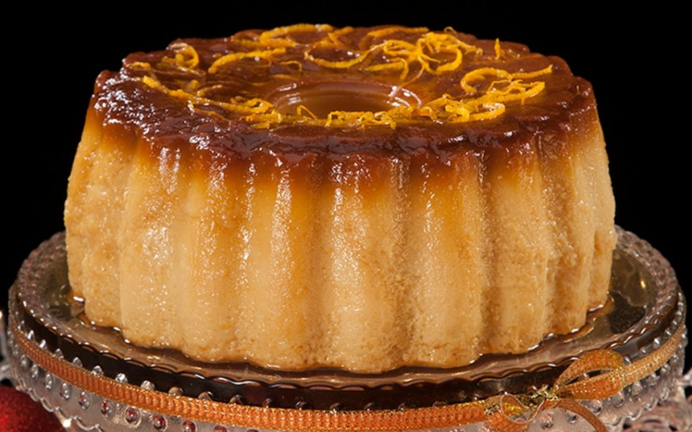

Pudim de Laranja e Vinho do Porto
Ingredients
- 1 cup granulated sugar (for caramel)
- 1/4 cup water
- 4 large eggs
- 1 cup orange juice, freshly squeezed
- 1/2 cup Port wine
- 1 cup whole milk
- 1 cup granulated sugar (for the pudding mixture)
- 1 teaspoon orange zest
- 1 teaspoon vanilla extract
- Pinch of salt

Preparation
-
Preheat the Oven:
Preheat your oven to 350°F (180°C).
-
Make Caramel:
In a saucepan, combine 1 cup of granulated sugar and water over medium heat. Stir until the sugar dissolves, then let it simmer without stirring until it turns into a golden caramel. Pour the caramel into the bottom of a pudding mold.
-
Prepare Pudding Mixture:
In a bowl, whisk together the eggs, orange juice, Port wine, whole milk, 1 cup of granulated sugar, orange zest, vanilla extract, and a pinch of salt.
-
Strain and Pour:
Strain the pudding mixture to ensure a smooth texture. Pour it over the caramel in the pudding mold.
-
Bake in a Water Bath:
Place the pudding mold in a larger baking dish. Fill the baking dish with hot water until it reaches halfway up the sides of the pudding mold. Bake in the preheated oven for about 50-60 minutes or until the pudding is set.
-
Cool and Refrigerate:
Allow the Pudim de Laranja e Vinho do Porto to cool in the mold, then refrigerate for at least 4 hours or overnight.
-
Unmold and Serve:
To serve, run a knife around the edge of the mold and invert the pudding onto a serving plate, allowing the caramel to drizzle over the top. Slice and enjoy the citrusy delights of this delightful dessert.